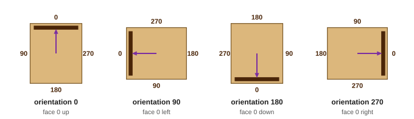
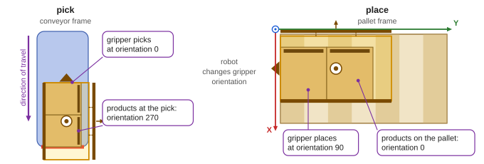
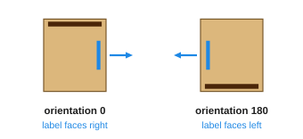

Orientation
OpenPallet 1.2Orientation is the side the front of an element (face 0 of a product, the front of the gripper) faces in the frame it lies in: 0, 90, 180 or 270, as on the compass. Orientation 0 is the normal pose.

A product in the normal pose (orientation 0) stands as it reaches the conveyor end without being turned: its length along X, face 0 at the top of the drawing.

products at the pick → gripper picks → gripper places → products on the pallet
| Step | Field in the file | Frame | example 1 | example 2 |
|---|---|---|---|---|
| products at the pick | products_at_pick[k].orientation |
conveyor | 270 | 90 |
| gripper picks | gripper_pick_orientation |
conveyor | 0 | 0 |
| gripper places | gripper_place_orientation |
pallet | 90 | 90 |
| products on the pallet | products[].orientation |
pallet | 0 | 180 |

- The product turns together with the gripper. The file gives all four orientations of a move: nothing has to be computed.
- The controller (PLC) gets the orientations at the pick and both orientations of the gripper. It does not need the orientation on the pallet: the products lie as the gripper placed them.
- The faces with a label (
label_sidesof the product type) are given in the normal pose, Product A:[270].
